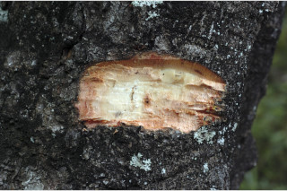
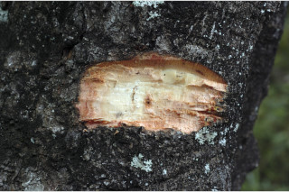
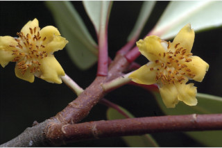
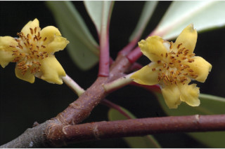
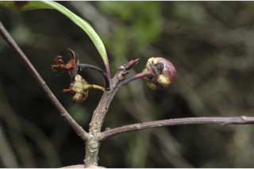
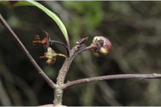

Small trees up to 15 m tall.
15 ಮೀ. ಎತ್ತರದವರೆಗಿನ ಸಣ್ಣ ಮರಗಳು.
Small trees up to 15 m tall.
சிறிய மரம் 15 மீ. உயரம் வரை வளரக்கூடியது.
Bark grey, irregularly scaly when mature; blaze pinkish.
ತೊಗಟೆ ಬೂದು ಬಣ್ಣದಲ್ಲಿದ್ದು,ಬಲಿತಾಗ ಅನಿಯತವಾಗಿ ಚಕ್ಕೆಯೆದ್ದಿರುತ್ತದೆ;ಕಚ್ಚು ಮಾಡಿದ ಜಾಗ ನಸುಗೆಂಪು.
Bark grey, irregularly scaly when mature; blaze pinkish.
மரத்தின் பட்டை சாம்பல் நிறமானது, முதிரும் போது ஒழுங்கற்ற செதில்களாக உதிருபவை; உள்பட்டை பிங்க் நிறமானது.
Young branchlets reddish, terete, glabrous.
ಕಿರುಕೊಂಬೆಗಳು ಕೆಂಪು ಛಾಯೆ ಹೊಂದಿದ್ದು,ದುಂಡಾಗಿದ್ದು ರೋಮರಹಿತವಾಗಿರುತ್ತವೆ.
Young branchlets reddish, terete, glabrous.
சிறிய நுனிக்கிளைகள் சிவப்பு நிறமானது, குறுக்குவெட்டுத் தோற்றத்தில் வளையமானது, உரோமங்களற்றது.
Leaves simple, alternate, spiral, clustered at twig ends; petiole 0.5-1.5 cm long, reddish, canaliculate, glabrous; lamina 4-10 x 1.2-3.5 cm, elliptic to elliptic-obovate, apex acute or obtuse and sometimes with retuse tip, base decurrent or attenuate, margin entire and revolute, glabrous, coriaceous, dark green and shining above, pale beneath; midrib slightly canaliculate above; secondary_nerves and tertiary_nerves obscure.
ಎಲೆಗಳು ಸರಳವಾಗಿದ್ದು ಪರ್ಯಾಯ ಮತ್ತು ಸುತ್ತು ಜೋಡನಾ ವ್ಯವಸ್ಥೆಯಲ್ಲಿದ್ದು ಕುಡಿಕೊಂಬೆಗಳ ತುದಿಯಲ್ಲಿ ಗುಂಪಾಗಿರುತ್ತವೆ; ತೊಟ್ಟುಗಳು 0.5 – 1.5 ಸೆಂ.ಮೀ. ವರೆಗಿನ ಉದ್ದವಿದ್ದು, ಕೆಂಪು ಛಾಯೆ ಹೊಂದಿದ್ದು ಕಾಲುವೆಗೆರೆ ಸಮೇತವಿರುತ್ತವೆ ಮತ್ತು ರೋಮರಹಿವಾಗಿರುತ್ತವೆ;ಪತ್ರಗಳು 4 – 10 X 1.2–3.5 ಸೆಂ.ಮೀ. ಗಾತ್ರ, ಅಂಡವೃತ್ತದಿಂದ ಅಂಡವೃತ್ತ - ಬುಗುರಿವರೆಗಿನ ಆಕಾರ ಹೊಂದಿದ್ದು,ಚೂಪಾದ ಅಥವಾ ಚೂಪಲ್ಲದ ಮತ್ತು ಕೆಲವು ವೇಳೆ ದುಂಡನೆಯ ತುದಿ ಮತ್ತು ತಗ್ಗುಳ್ಳ ಅಗ್ರ ಹೊಂದಿದ ತುದಿ, ತಳಭಾಗಕ್ಕೆ ವಿಸ್ತರಿಸಿದ ಅಥವಾ ಒಳಬಾಗಿದ ರೀತಿಯವರೆಗಿನಬುಡ, ನಯವಾದ ಮತ್ತು ಹಿಂಸುರುಳಿಗೊಂಡ ಅಂಚು ಹೊಂದಿದ್ದು ರೋಮರಹಿತವಾಗಿರುತ್ತವೆ,ಪತ್ರಗಳ ಮೇಲ್ಮೈ ತೊಗಲನ್ನೋಲುವ ಮಾದರಿಯಲ್ಲಿದ್ದು,ಕಡುಹಸಿರು ಬಣ್ಣ ಮತ್ತು ಹೊಳಪನ್ನುಳ್ಳ ಮೇಲ್ಭಾಗ,ಮಾಸಲು ಬಣ್ಣದ ತಳಭಾಗವನ್ನು ಹೊಂದಿರುತ್ತವೆ; ಮಧ್ಯನಾಳ ಪತ್ರದ ಮೇಲ್ಭಾಗದಲ್ಲಿ ಸ್ವಲ್ಪಮಟ್ಟಿನ ಕಾಲುವೆಗೆರೆ ಸಮೇತವಿರುತ್ತದೆ; ಎರಡನೇ ದರ್ಜೆಯ ಮತ್ತು ಮೂರನೇ ದರ್ಜೆಯ ನಾಳಗಳು ಅಸ್ಪಷ್ಟ.
Leaves simple, alternate, spiral, clustered at twig ends; petiole 0.5-1.5 cm long, reddish, canaliculate, glabrous; lamina 4-10 x 1.2-3.5 cm, elliptic to elliptic-obovate, apex acute or obtuse and sometimes with retuse tip, base decurrent or attenuate, margin entire and revolute, glabrous, coriaceous, dark green and shining above, pale beneath; midrib slightly canaliculate above; secondary_nerves and tertiary_nerves obscure.
இலைகள் தனித்தவை, மாற்றுஅடுக்கமானவை, சுழல் போன்று அமைந்தவை, சிறுகிளைகளின் நுனியில் இலைகள் கூட்டமாக மற்றும் நெருக்கமாக காணப்படும்; இலைக்காம்பு 0.5-1.5 செ.மீ. நீளமானது, சிவப்பு நிறமானது, குறுக்குவெட்டுத் தோற்றத்தில் கேனாலிகுலேட், உரோமங்களற்றது; இலை அலகு 4-10 X 1.2-3.5 செ.மீ., நீள்வட்ட வடிவானது முதல் நீள்வட்டம்-தலைகீழ் முட்டை வடிவானது, அலகின் நுனி கூரியது அல்லது மெட்டையானது மற்றும் சிலசமயங்களில் சிறு பிளவுடையது (ரெட்யூஸ்), அலகின் தளம் டெக்கரண்ட் அல்லது அட்டனுவேட், அலகின் விளிம்பு முழுமையானது மற்றும் பின்புறம் வளைந்து (ரெவலுட்) காணப்படும், உரோமங்களற்றது, கோரியேசியஸ், கரும்பச்சை நிறமானது மற்றும் அலகின் மேற்பரப்பு பளபளப்பானது, அலகின் கீழ்பரப்பு வெளிறியது; மையநரம்பு மேற்புறத்தில் அலகின் பரப்பைவிட சிறிது பள்ளமானது; இரண்டாம் நிலை நரம்புகள், மூன்றாம் நிலை நரம்புகள் மற்றும் பிற நரம்புகள் கண்களுக்கு புலப்படாது.
Flowers unisexual, yellow, axillary or extra axillary, solitary; pedicel 3 cm long.
ಹೂಗಳು ಏಕಲಿಂಗಿಗಳು, ಹಳದಿ ಬಣ್ಣದಲ್ಲಿದ್ದು, ಅಕ್ಷಾಕಂಕುಳಿನಲ್ಲಿ ಅಥವಾ ಹೊರ –ಅಕ್ಷಾಕಂಕುಳಿನಲ್ಲಿ ಒಂಟಿಯಾಗಿರುತ್ತವೆ; ತೊಟ್ಟು 3 ಸೆಂ.ಮೀ.ಉದ್ದವಿರುತ್ತದೆ.
Flowers unisexual, yellow, axillary or extra axillary, solitary; pedicel 3 cm long.
மலர்கள் ஓர் பாலானவை, மஞ்சள் நிறமானது, இலைக்கோணங்களில் காணப்படுபவை அல்லது இலைக்கோணங்களுக்கு சற்று மேல் அமைந்தவை, தனித்தவை; மலர்காம்பு 3 செ.மீ. நீளமானது.
Berry, ovoid or globose, reddish when ripe; seeds 4-6.
ಬೆರ್ರಿಗಳು ಅಂಡಾಕಾರ ಅಥವಾ ಗೋಳಾಕಾರದಲ್ಲಿದ್ದು,ಕಳಿತಾಗ ಕೇಂಪು ಛಾಯೆಯನ್ನು ಹೊಂದಿರುತ್ತವೆ;ಬೀಜಗಳ ಸಂಖ್ಯೆ4 - 6.
Berry, ovoid or globose, reddish when ripe; seeds 4-6.
முழுச்சதைகனி (பெர்ரி), முட்டை வடிவானது அல்லது கோள வடிவமானது, கனியும் போது சிவப்பு நிறமானது; விதைகள் 4-6.
 


 

 
